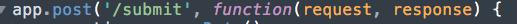

Introduction
I was hired to test a Heroku application for security purposes
Methodology
I tested three modes of attacks
- Injection #1
- Man-in-the-Middle (Authentication) #2
- XSS #7
I chose these attacks because they are easy
to implement and occupy spots (mentioned above)
in the OWASP Top 10 from 2017
The tools that I used:
- MongoDB commands
- Burp Suite
- curl
- Javscript
Findings
Issues Identified:
- MongoDB is vulnerable to injection
This means that commands can be run that cause the database to return sensitive user information
- There is no authentication to prevent
man in the middle attacks
This means that proxy servers can change the information in between the client and server
- User input is vulnerable to XSS
This means that Javascript can run on the page and modify any aspect of it
Location:
- Injection: Issue in request to MongoDB database
- MITM: Issue in lack of authentication in HTTP protocol
- XSS: The lack of stripping user data after receiving it
Description:
I found the issue by testing MongoDb commands in the query section
I found the issue by examining the HTTP request and repsonse
using Burp Suite

I found the issue by curling data that included Javascript.
Resolution:
- Injection: ensure username doesn't have Mongo characters
like $
- MITM: Authenticate the HTTP POST request

- XSS: Strip special characters!
Conclusion:
Due to the existence of better hackers than myself, it is worrisome
that these basic security flaws were found. Also consider protecting against database overflow and commands that break the database
References:
POST Authentication
No SQL
MongoDB hack